如果只能學一個 Excel 功能，請學樞紐。它能把幾萬筆原始資料瞬間變成可讀報表。
建立步驟
① 點任一儲存格 → ② 插入 → 樞紐分析表 → ③ 拖欄位到 4 大區域。
樞紐分析是什麼？（概念圖）
簡單來說：把「原始一筆一筆的交易資料」→ 丟進樞紐 → 用四大區域「切」出你要的報表角度。


原始資料 → 樞紐結果
左邊是一筆一筆的交易，右邊是樞紐把它「聚合」後的報表：
原始資料（流水帳）
部門
月份
業績
電子
1月
120,000
電子
2月
95,000
家電
1月
80,000
家電
2月
110,000
電子
1月
60,000
→
樞紐分析表（聚合後）
部門 ↓ 月份 →
1月
2月
電子
180,000
95,000
家電
80,000
110,000
4 大區域怎麼用
| 區域 | 用途 | 範例 |
|---|---|---|
| 列（Rows） | 變成左邊的「分組」 | 部門、產品類別 |
| 欄（Columns） | 變成上方的「分組」 | 月份、年度 |
| 值（Values） | 要計算的數字 | 業績、數量 |
| 篩選（Filters） | 頂部下拉篩選 | 地區、年度 |
超實用功能
右鍵 → 群組 → 可以把日期自動分成「年/季/月」。值欄位設定 → 改顯示為「百分比」、「累計」、「差異」等。插入交叉分析篩選器（Slicer）→ 視覺化篩選按鈕。
⚠️ 注意原始資料有合併儲存格、空白欄位、欄位名稱重複 → 樞紐會壞。建議資料先轉成「表格」（⌘+T）再做樞紐，新增資料會自動納入。